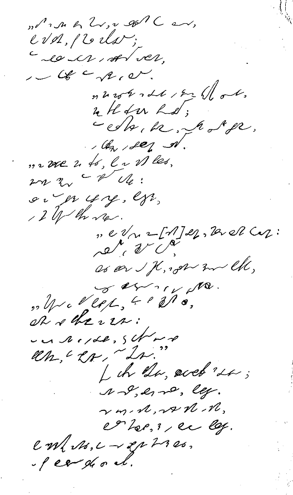
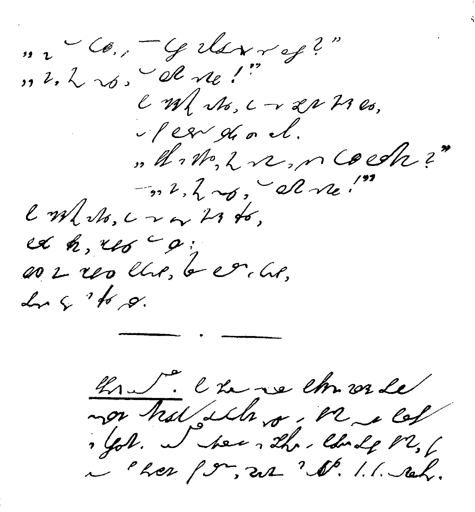

International
InternationalTrzech budrysów
2012-02-25 | autor: flamenco108Znalazłem materiał z polskim systemem Ożarowskiego utworzonym w oparciu o metodę Rollera. Trzeba go zeskanować i ubrać w formę książki PDF, opublikować na jakimś serwerze i tu wrzucić link. Ale to trochę później, bo na razie dużo innych zajęć, ale o tym sza…! Dziś zatem, dla zaostrzenia apetytu, proponuję przyjrzeć się wierszowi (wierszu?) pt. “Trzech budrysów” niejakiego Adama Mickiewicza. Zapisano oczywiście systemem Rollera-Ożarowskiego. I jak Wam się podoba?

Stary Budrys trzech synów, tęgich jak sam Litwinów,
Na dziedziniec przyzywa i rzecze:
“Wyprowadźcie rumaki i narządźcie kulbaki,
A wyostrzcie i groty, i miecze.
Bo mówiono mi w Wilnie, że otrąbią niemylnie
Trzy wyprawy na świata trzy strony:
Olgierd ruskie posady, Skirgiełł Lachy sąsiady,
A ksiądz Kiejstut napadnie Teutony.
Wyście krzepcy i zdrowi, jedzcie służyć krajowi,
Niech litewskie prowadzą was Bogi;
Tego roku nie jadę, lecz jadącym dam radę:
Trzej jesteście i macie trzy drogi.
Jeden z waszych biec musi za Olgierdem ku Rusi,
Ponad Ilmen, pod mur Nowogrodu;
Tam sobole ogony i srebrzyste zasłony,
I u kupców tam dziengi jak lodu.
Niech zaciągnie się drugi w księdza Kiejstuta cugi,
Niechaj tępi Krzyżaki psubraty;
Tam bursztynów jak piasku, sukna cudnego blasku
I kapłańskie w brylantach ornaty.
Za Skirgiełłem niech trzeci poza Niemen przeleci;
Nędzne znajdzie tam sprzęty domowe,
Ale za to wybierze dobre szable, puklerze
I innie stamtąd przywiezie synowę.
Bo nad wszystkich ziem branki milsze Laszki kochanki,
Wesolutkie jak młode koteczki,
Lice bielsze od mleka, z czarną rzęsą powieka,
Oczy błyszczą się jak dwie gwiazdeczki.
Stamtąd ja przed półwiekiem, gdym był młodym człowiekiem,
Laszkę sobie przywiozłem za żonę;
A choć ona już w grobie, jeszcze dotąd ją sobie
Przypominam, gdy spojrzę w tę stronę.
Taką dawszy przestrogę, błogosławił na drogę;
Oni wsiedli, broń wzięli, pobiegli.
Idzie jesień i zima, synów nié ma i nié ma,
Budrys myślał, że w boju polegli.
Po śnieżystej zamieci do wsi zbrojny mąż leci,
A pod burką wielkiego coś chowa.

“Ej, to kubeł, w tym kuble nowogrodzkie są ruble?”
“Nie, mój ojcze, to Laszka synowa”.
Po śnieżystej zamieci do wsi zbrojny mąż leci,
A pod burką wielkiego coś chowa.
“Pewnie z Niemiec, mój synu, wieziesz kubeł bursztynu?”
“Nie, mój ojcze, to Laszka synowa”.
Po śnieżystej zamieci do wsi jedzie mąż trzeci,
Burka pełna, zdobyczy tam wiele,
Lecz nim zdobycz pokazał, stary Budrys już kazał
Prosić gości na trzecie wesele.
2012-02-25 autor: flamenco108